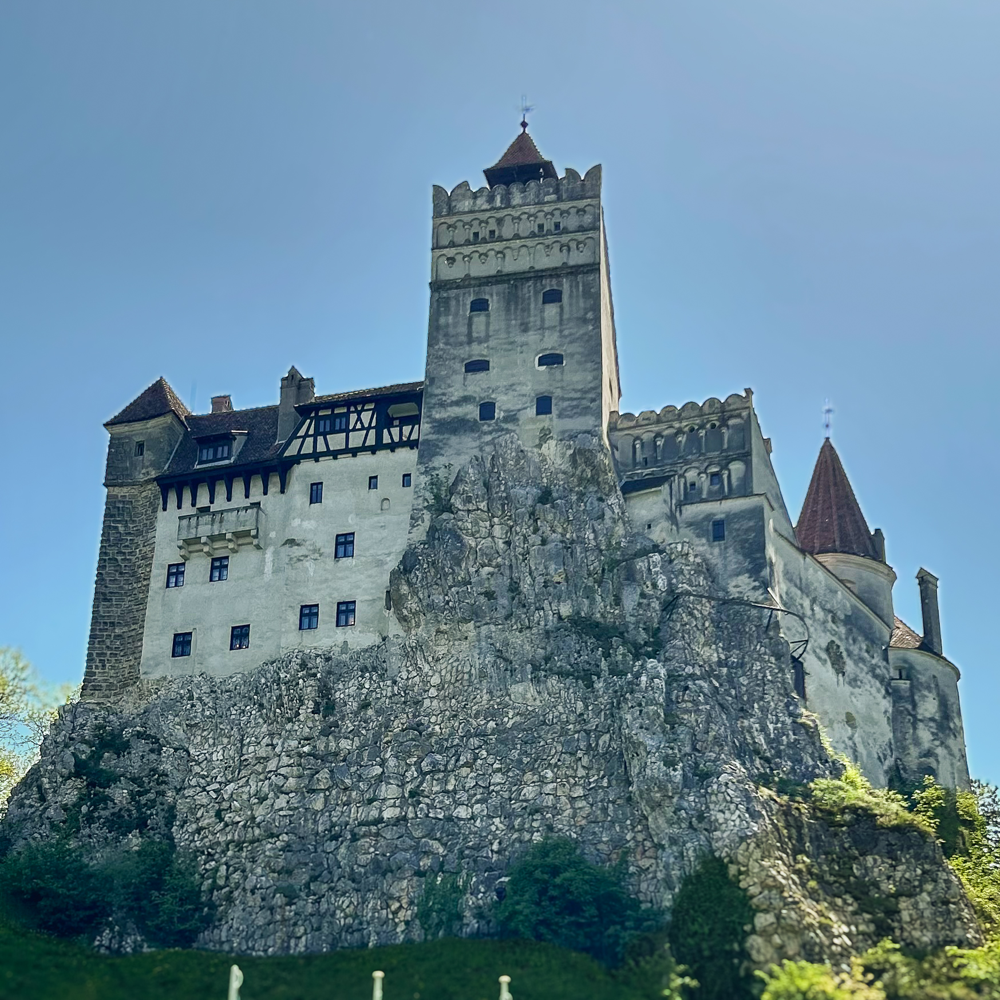
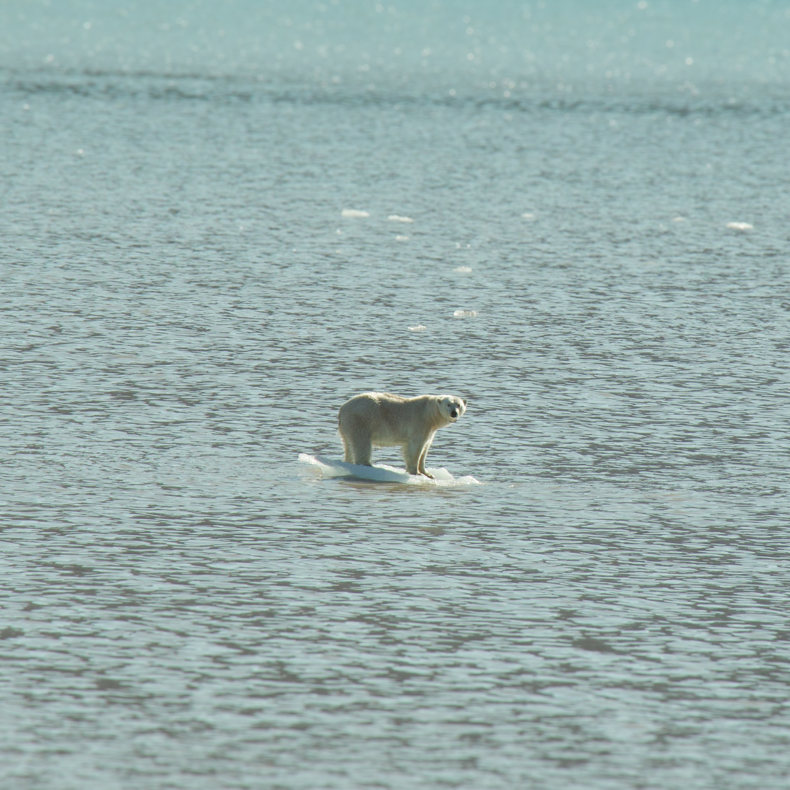

Ønsker du at se og opleve verdenen, men ikke se alle de helt almindelige steder, hvor alle andre tager hen? Så følg med her, hvor du kan læse om mange af de forskellige skønne, men skjulte perler rundt i verdenen. Få inspiration til din næste rejse, om det er den lange eller korte rejse. Om det er med et stramt budget eller ej. Du vil få de bedste tips og tricks til at komme ud i verdenen!
Rumænien
Brasov

Brasov, en ældgammel by skjult i de Transsylvanske bjerge i Rumænien, er en anden skjult perle, der har meget at tilbyde. Byen er omgivet af en betagende natur med de majestætiske Carpatian-bjerge som baggrund og har en rig historie, der strækker sig tilbage til middelalderen. Ikke langt fra Brasov by kan du finde:
Draculas Slot
Peleș slot
Cetatea Râșnov
Her kan du opleve europæisk charme uden overfyldte turistområder og samtidig nyde prisvenlige muligheder for mad og indkvartering.
Svalbard
Longyearbyen

I søgen efter det mest unikke rejsemål, der byder på en helt utrolig naturoplevelse, er Longyearbyen i Svalbard et rigtigt godt bud. Dette arktiske paradis er et af verdens mest isolerede steder og ligger i den nordlige del af Nordatlanten. Her kan du blandt andet opleve:
Pyramiden, en spøgelses by
Barentsburg en russisk mineby
Midnatssol om sommeren
Nordlys om vinteren
Utroligt dyreliv med isbjørne, blåhvaler og meget andet
Longyearbyen er en destination, der vil tilfredsstille enhver eventyrlysten rejsende.
Luxembourg
Luxembourg City
Luxembourg, en lille europæisk juvel, har ofte været overset i skyggen af sine mere kendte naboer. Men hvis du er på udkig efter en blanding af historisk charme og naturskønhed, er Luxembourg en destination, du ikke må gå glip af. Denne lille nation byder på en fantastisk blanding af:
Middelalderlige borge
Smukke landskaber
Et blomstrende kulturliv
Gå gennem de brostensbelagte gader i hovedstaden Luxembourg City og udforsk UNESCO-listede gamle bydele. Luxembourg er en skattekiste af historie og naturskønhed, der venter på at blive opdaget.
Disse tre destinationer er kun begyndelsen på din rejse mod at opdage verdens skjulte perler. Uanset om du er på udkig efter det ekstreme eventyr i arktiske landskaber eller ønsker at fordybe dig i den storslåede historie og kultur, der findes i hjertet af Europa, er der en verden fuld af skjulte rejsedestinationer, der venter på at blive udforsket.